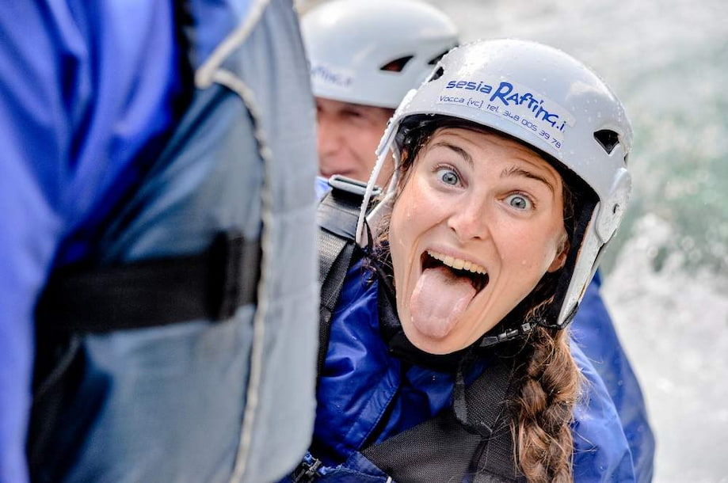

We believe the best adventure is to bring people together. That's our greatest mission. The more you connect with nature alongside friends and family, the more excited we are to give you an unforgettable experience, backed by high-quality equipment built to ensure your safety.